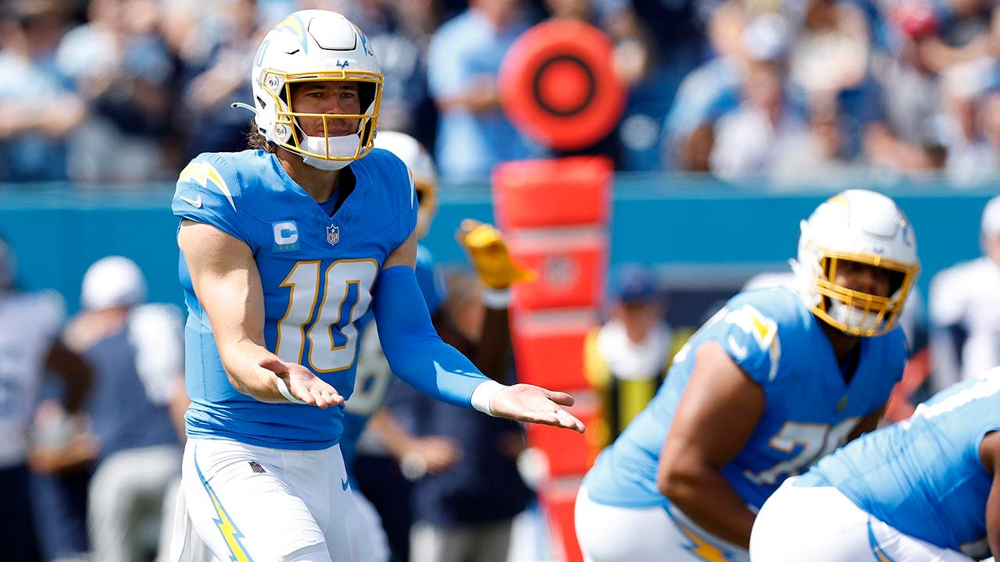
Week Two is officially over, and once that happens, we typically know everything about how a season will unfold (including Chargers Gonna Chargers).
From here on out, everything is on you.
Matchup of the Week
This is a big week. I know that might sound like hyperbole, but four matchups are 1-1 and the other is…
*️⃣ 8==D (2-0) vs. Buttery Charbonnet (0-2) *️⃣
There are some obvious implications here. But the most important is that Tony needs to avoid a loss to stay way down in the cellar. After this week, there will be five teams with two or more wins. Being two games back from fifth is a scary position to be in. But Tony seems to have a different take, here’s what he had to say to me this week:
I’m pretty happy with my 0-2 start.. not sure I’m ready to tinker any more
I mean. He did look great in the Slutler uni, just hope he saved it. If PJ loses, we’ll have five teams tied for first and five tied for sixth. Yowzers!
Waiver Wire Wizard
🧙🏻♂️ 8==D - Daniel Jones ($0) - Remembering to grab a zero-dollar guy on Thursday is smart even if it’s not the sexiest pickup. Especially with how Fields is playing.
Honorable Mentions: * Exotic Engrams - Jordan Love ($2) - Traded 30 mins later in the Mahomes package. * Love Heem - Kirk Cousins ($5) - The QB1 for now. This team might throw a million passes, and Kirk’s been very efficient.
Cries for Help
😭 Love Heem, but it’s gotta be KJT all over.
Honorable Mentions: * Jus-Kareemn-4-Herb - Spending $53 dollars on Zach Moss and Kareem Hunt seems… high. But this guy loves the herb. * Tua Williams One Kupp - $30 on Cam Akers, the backup RB in Minnesota.
Week Three Power Rankings
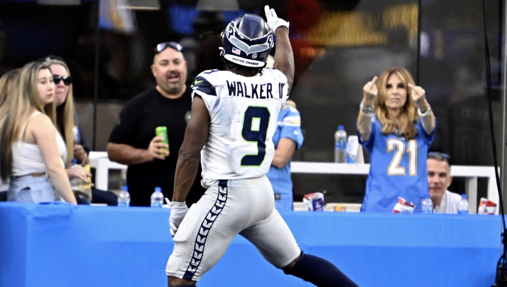
👑 8==D (2-0) ⬆️
Waiver Budget: $79
Let’s put the hex back on PJ! Nothing else to say except fine win last week, brother.
Cause for celebration: sixth place in points, but first in record. That’s a dream start honestly, when hoping the points start coming eventually.
Cause for concern: RB room looks tough to figure out, but Hall has probably yet to be unleashed (though in this new shity version of the Jets offense). And obviously Justin Fields sucks.
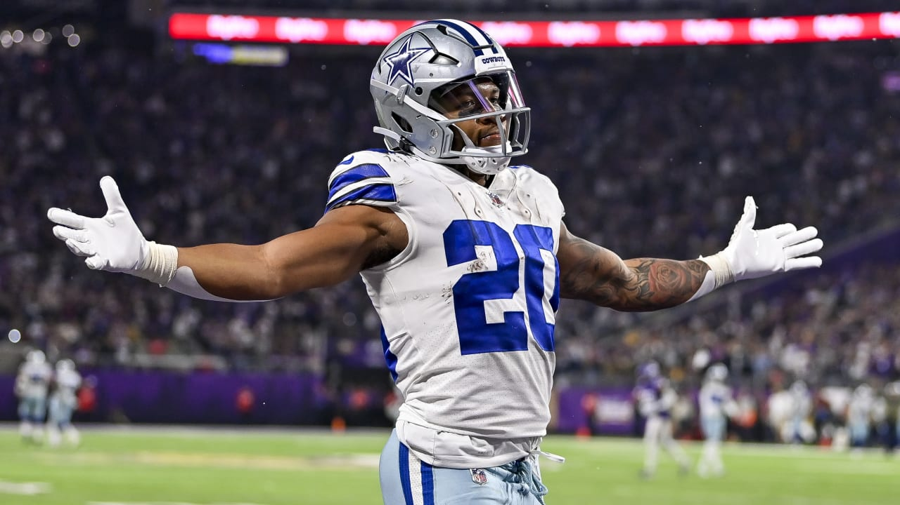
2. Exotic Engrams (1-1) ⬇️
Waiver Budget: $66
Was in it until the last minutes of MNF, but am an idiot and started Dillon. Do you ever look at yourself in the mirror, at 11:00am on Sunday and say, who the fuck is this idiot looking at me?
Cause for celebration: I quite like my team still, espeically with Mahomes stepping in for a so-far-lackluster Lawrence. I feel good about any week with Mahomes, Pollard and Hill going.
Cause for concern: Garrett Wilson - without two spectacular TDs he’d be like WR50.
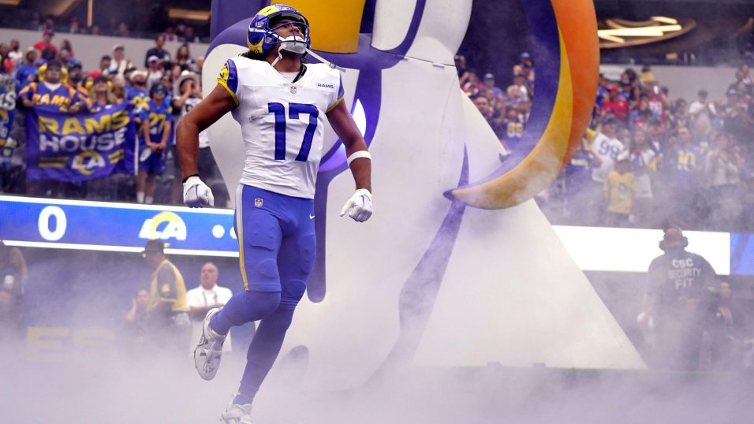
3. Hurts Donut (1-1) ⬆️⬆️⬆️
Waiver Budget: $62
Joel rebounds with a win, after being the top-scoring loser last week. The Puka pick really solidified his WR room with Olave in form. Will he keep this pace?
Cause for celebration: Puka obviously.
Cause for concern: Hurts and the Eagles look a little off, but that seemingly will change. Can we say the same about Jacobs and Goedert? Joel’s trade teeters while we raises in the rankings.
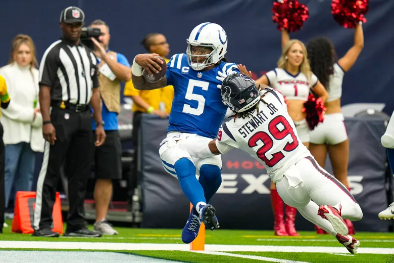
4. Diggin That Bijan Mustard (1-1) ⬆️⬆️⬆️⬆️
Waiver Budget: $80
I originally had CJ at three, but his team’s depth is suspect. This week’s starting lineup is stacked, but the bench does not look good at allll.
Cause for celebration: Hockenson TE1, Bijan aka Slippery Sex, KA13 turning back the clock, Richardson pickup looks great (if he stops hitting his head so much)
Cause for concern: Geno and Richardson could be a headache to decide between each week (apart for the depth!)
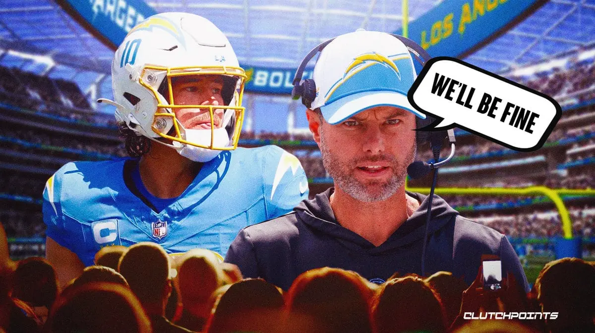
5. Jus-Kareemn-4-Herb (1-1) ⬇️⬇️
Waiver Budget: $25!
This man went absolutely nuts on FAA this week. Big bets, big risk.
Cause for celebration: Andy has four of the top 15 WRs right now, including probably the most hated on preseason, Mike Evans.
Cause for concern: Without Ekeler, the RB room looks bleak. Oh, and also the crushing inability to ever put Evans into the starting lineup, knowing he will bust for sure then.
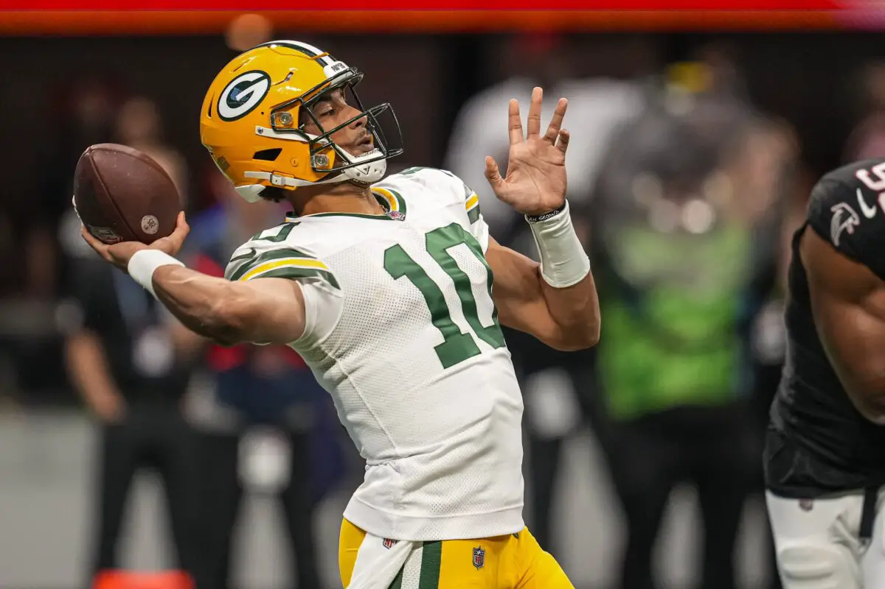
6. Love Heem (1-1) ⬇️⬇️⬇️
Waiver Budget: $106!
RIP Nick Chubb. We hope to see you back on the field again. Love could be the next great QB, but it’s only been two weeks. Mattison takes a hit after a very average start… maybe Akers will be the starter?
Cause for celebration: Easily the most FAAB, could be in a good position if there’s a huuuge must-add pickup due to injury/trade.
Cause for concern: Not knowing how to pick up players with this money may come back to bite him.
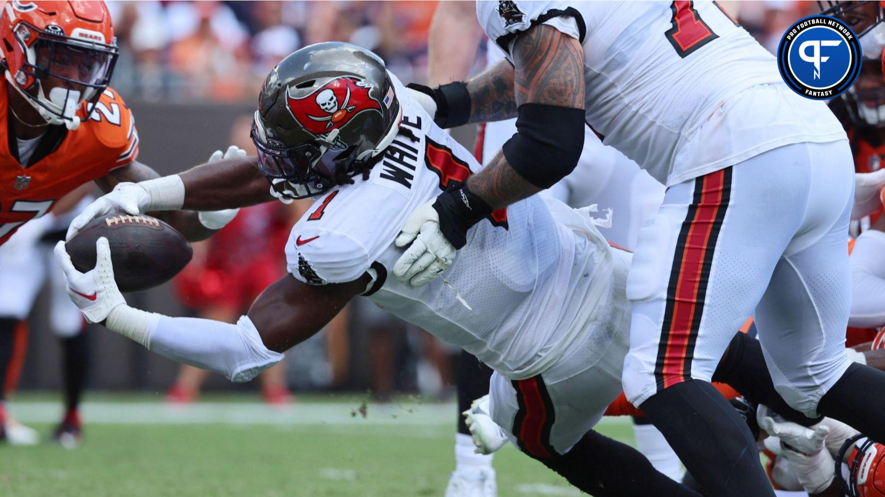
7. Unpaid Bills (1-1) ⬆️⬆️⬆️
Waiver Budget: $66
We can’t forget week one so quickly, but Neil’s squad is hitting us with the Neuralyzer (from MIB) quickly with the strong week, and bench performance.
Cause for celebration: Neil scored 141, and had four players on his bench averaging over 20 (Akers being a scratch).
Cause for concern: Tight End is a big hole. Where most of us have a hole, Neil’s is bigger.
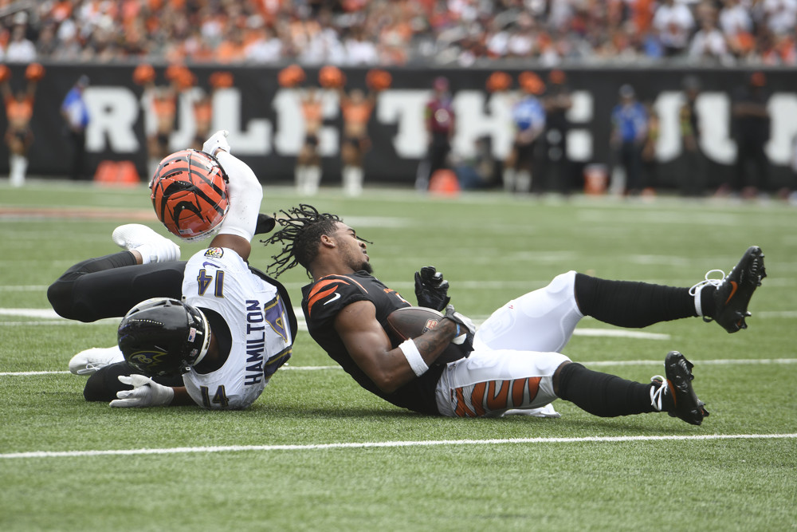
8. Tua Williams One Kupp ⬇️
Waiver Budget: $64
Having two Bears on your team is inexcusable. WR room is in shambles, Matt desperately needs Chase to bounce back.
Cause for celebration: Tua looks great, leading the most potent offense in the league. QB6 after facing NE, where they forced the Dolphins to run (on their way to a win).
Cause for concern: The standard deviation of highs and lows is large for almost every player on this team. Will it be boom or bust, or settle in… and where will they settle if so.
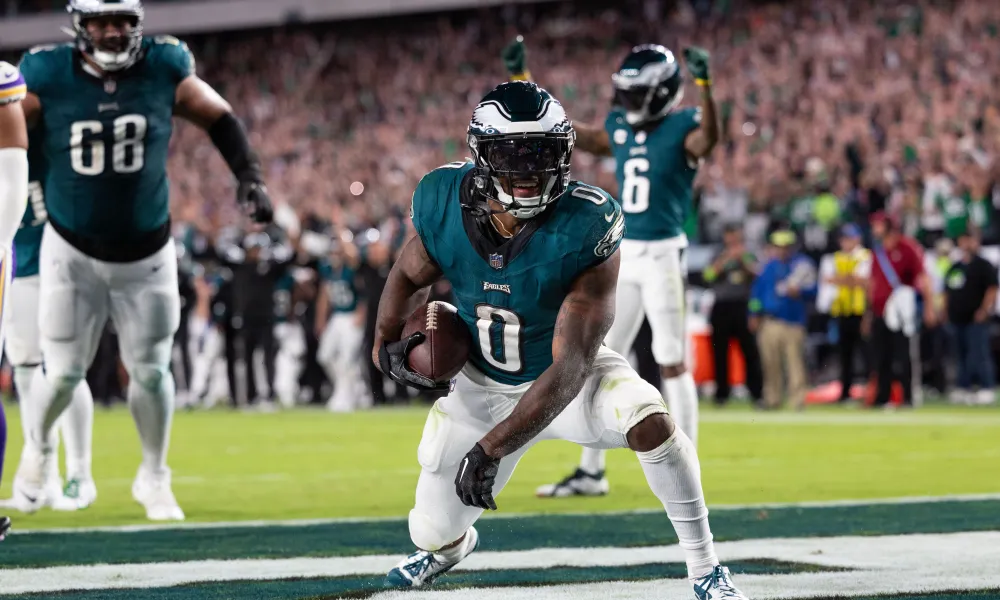
9. Sweet Brutha Numpsay (1-1) ↔️
Waiver Budget: $37
A loss with a below-average score seems better than the Week One win. This man has no financial control! A real fight at the bottom right now.
Cause for celebration: Kyren Williams is a fucking bellcow. Swift has his best career game in the same week (175 rushing yards, 133 before contact - wild).
Cause for concern: AJ Brown and Adams are not playing at the level the computer drafted them at. We expect positive regression there, but if not, the only other WR on the team are Zay Jones and F1, both wildly up and down so far (and Jones is missing practice).
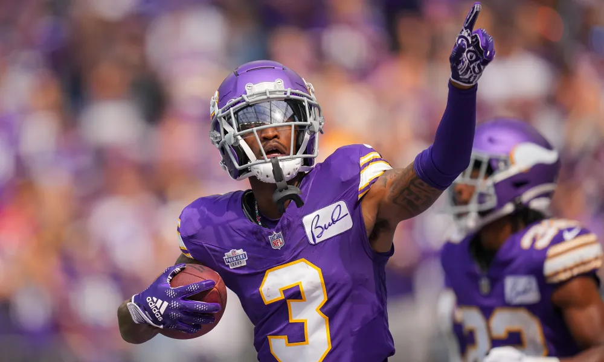
💩 Buttery Charbonnet (0-2) ⬇️⬇️⬇️⬇️⬇️
Waiver Budget: $78
Oh sweet Tony, how the mighty have fallen.
Cause for celebration: Tony only has ten points less than PJ, and has CMC, Kelce and JA17.
Cause for concern: The bench is bad. And he’s down two so far (obviously).
Good luck to everyone besides Joel! 💋
“To do things you’ve never done before, you have to do things you’ve never done before.” – Sean Payton
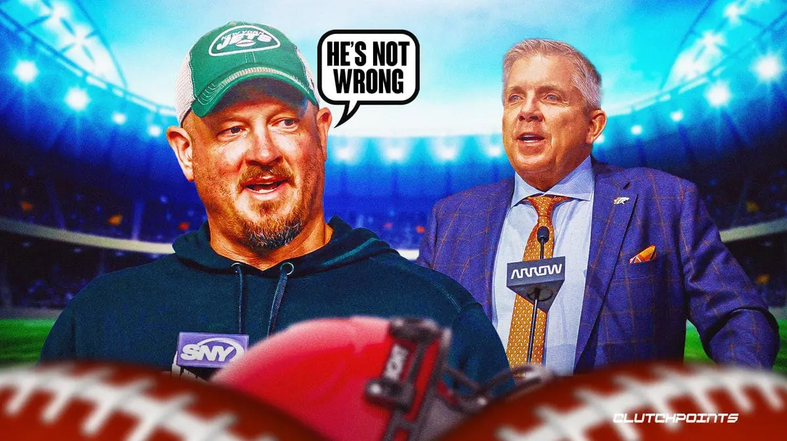